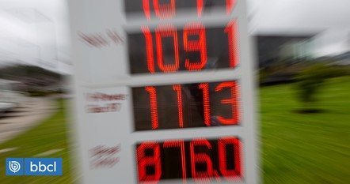
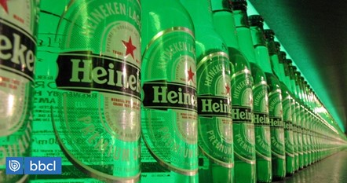

Enap reporta nueva alza en las gasolinas de 6,7 pesos por litro: gas registra disminución de 4$ |
|---|
| Categoria: Negocio |
|  |
La Empresa Nacional del Petróleo (ENAP) anunció durante la jornada de este miércoles 30 de marzo un aumento en todos los combustibles, menos en el gas licuado del petróleo (GLP) de uso vehicular que registró una disminución de 4,0 pesos por litro. El detalle de Enap publicado durante esta tarde indica que las gasolinas de 93 y 97 octanos sufrirán una nueva alza de $6,7 por litro ($/lt). Además, se informó sobre un nuevo alza en el valor del diésel, el cual sumó $6,7 por litro ($/lt). |
Dos grandes marcas de cerveza anuncian su salida de Rusia |
|---|
| Categoria: Negocio |
|  |
La holandesa Heineken decidió retirar sus productos de Rusia, lo mismo que la danesa Carlsberg. “Luego de la previamente anunciada revisión estratégica de nuestras operaciones, hemos concluido que la propiedad de Heineken en el negocio en Rusia ya no es sustentable ni duradero en el contexto actual”, afirmó la primera en un comunicado. |
Banco Central planteó preocupación por impacto de la inflación en las personas y avizora riesgo de recesión |
|---|
| Categoria: Negocio |
De acuerdo con las expectativas del IPoM, el PIB rondaría entre 1% y 2% este 2022, e incluso el Central le abre la puerta a una eventual contracción para el año siguiente, estimando un rango entre el -0,25% y el 0,75%. Ya para 2024, la economía "se expandiría en torno a su potencial", entre 2,25% y 3,25%. El instituto emisor sostiene que "la inflación y sus perspectivas de corto plazo han continuado al alza, anticipando niveles cercanos a 10% para mediados de este año". |